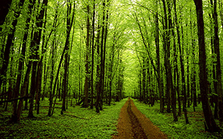
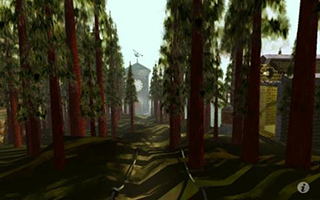
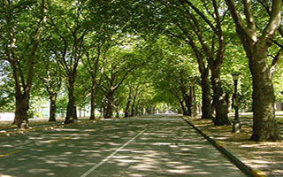
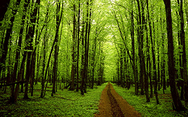
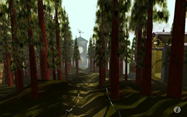
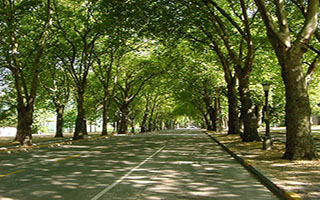

The Image class
The image class allows you to assign multiple image sources to an image element and create hotspots/image map areas. You can even recreate the classic game MYST in theory.
- Turn in a direction by clicking the edges if the image
- Click on the wooden box next to the well and see what happens, then click it again